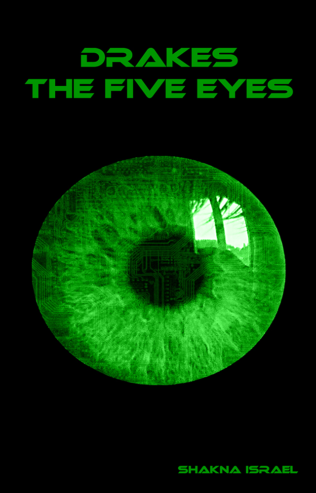

Contributing
-
Submitting an Issue, Complaint or Suggestion
- Review the Issues, past and present, to see if it has been addressed.
- If you think an issue needs re-opening, comment on it, and ensure you include @shakna-israel in your comment.
- If your issue contains spoilers about the story, ensure you use the Spoilers tag.
- If your issue relates to the story, ensure you use the Story tag.
- If you have a suggestion, ensure you use the Enhancement tag.
- If you have an issue in the writing, such as grammar, sentence structure or flow, ensure you use the Prose tag.
- Review the Issues, past and present, to see if it has been addressed.
-
Forking
- You are free to fork the repository, and use it for your own purposes.
- If you would like, you can notify @shakna-israel, through an Issue and your fork can be added to the README
- There are some limitations to the LICENSE:
- You must give appropriate credit, and indicate if you made changes.
- You must use the Creative Commons Attribution-ShareAlike 4.0 International license when licensing your own work.
- You are allowed to use the repository for commercial purposes.
